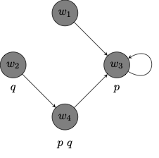

1 Introduction
Propositional logic classifies propositions into main categories: true and false. Alethic modal logic makes distinctions between different modes in which a proposition may be true or false. The formal framework of modal logic expands the language of propositional logic with a sentential operator, \(\Box\), for one of those modes, necessity, and a dual operator, \(\Diamond\), for another, possibility. There are, however, other interpretations of the formalism.
| modality | \(\Box\) | \(\Diamond\) |
|---|---|---|
| alethic | necessarily | possibly |
| temporal | always | sometimes |
| epistemic | it is known | for all it is known |
| deontic | obligatory | permitted |
These distinctions may play a crucial role in philosophical argumentation.
Consider the argument:
- Necessarily, if God exists, then God exists necessarily.
- It is possible that God exists.
- It is possible that God exists necessarily.
- God exists.
If we let \(p\) be the proposition that God exists, we may formalize the argument in the framework of propositional modal logic:
\[ \begin{array}{lllll} 1 & & \Box (p \to \Box p) & & \\ 2 & & \Diamond p & & \\ 3 & & \Diamond \Box p & & \\ 4 & & p & & \\ \end{array} \]
But does the conclusion of the argument follow from its premises?
Consider the argument:
- If there is a sea battle tomorrow, then it was already the case that there would be a sea battle tomorrow.
- If it was already the case that there would be a sea battle tomorrow, then necessarily, it was the case that there would be a sea battle tomorrow.
- If necessarily, it was the case that there would be a sea battle tomorrow, then necessarily, there is a sea battle tomorrow.
- So, if there is a sea battle tomorrow, then necessarily so.
The argument exploits the interaction between temporal and alethic modalities. In particular, we will use \(F\) for ‘it will once be the case that’ and \(W\) for ‘it was once the case that’. Finally, we use \(\Box\) for ‘it is necessary that’.
\[ \begin{array}{lllll} 1 & & F p \to W F p & & \\ 2 & & WF p \to \Box W F p & & \\ 3 & & \Box WFp \to \Box F p & & \\ 4 & & Fp \to \Box F p & & \\ \end{array} \]
How should we interpret the formalism? We use truth tables to interpret the language of propositional logic because propositional connectives are truth-functional, e.g., the truth value of a conjunction is a function of the truth values of its conjuncts. The strategy does not seem to be available in the case of modal logic, since the modal operator \(\Box\) is not truth-functional:
\[ \begin{array}{|c|c|} \hline \varphi & \Box \varphi \\ \hline T & ? \\ \hline F & F \\ \hline \end{array} \]
When \(\varphi\) is false, \(\Box \varphi\) will of course be false. But the truth of \(\varphi\) leaves open whether \(\Box \varphi\) is true or false, e.g., \(\Box \varphi\) will be true when \(\varphi\) is a tautology but false when \(\varphi\) is interpreted to make a contingent statement.
One may attempt to overcome this limitation with the help of a more fine-grained distinction between necessary and contingent truths, on the one hand, and necessary and contingent falsehoods, on the other. We may even reserve the letters \(t\) and \(T\) for contingent and necessary truths respectively, and we may similarly use \(f\) and \(F\) for contingent and necessary falsehoods respectively. This appears to suggests a truth table for each negation and \(\Box\):
\[ \begin{array}{|c|c|c|} \hline \varphi & \neg \varphi & \Box \varphi\\ \hline T & F & T\\ \hline t & f & F\\ \hline F & T & F\\ \hline f & t & F\\ \hline \end{array} \]
The problem remains that we cannot generalize the scheme to cover binary propositional connectives such as the material connective. Once we opt for the more fine-grained distinction between necessary and contingent truths and falsehoods, the truth value of the conditional ceases to be a function of the truth values of antecedent and consequent.
\[ \begin{array}{|c|c|c|c|c|} \hline \to & T & t & F & f\\ \hline T & T & t & F & f \\ \hline t & T & ? & F & f\\ \hline F & T & T & T & T \\ \hline f & T & t & t & ? \\ \hline \end{array} \]
When \(\varphi\) and \(\psi\) are contingently true, \(\varphi \to \psi\) may be necessarily true, e.g., \(p \to p\) if \(p\) is contingently true, or merely contingently true, e.g., \(p\to q\) for suitable choices of contingent propositions \(p\) and \(q\). Likewise, when \(\varphi\) and \(\psi\) are contingently false, the conditional may be necessarily or contingently true.
We must look elsewhere for an interpretation of the formalism of propositional modal logic. One key observation at this point is that propositions differ not just with respect to whether they are true or false, they may differ with respect to the circumstances under which they are true or false. The propositions expressed by the statements ‘Los Angeles has over three million inhabitants’ and ‘Kilimanjaro rises to 5,895 meters’ are both true but there are possible circumstances under which one is true and the other is false.
We may think of possible worlds as complete specifications of a way the world might be, and we may ask whether a sentence is true at a possible world. That is, we may ask whether the possible world in question specifies circumstances under which the sentence is in fact true.
Once we take on board the thought that a sentence may be true when evaluated with respect to one possible world but not when evaluated with respect to another, we may ask what is for a possible world to be possible relative to another. The proposition that I’m a philosopher is true given how the world is, but there are possible circumstances under which I’m an engineer. We codify that as the thought that a world at which I’m an engineer is possible with respect to the world of evaluation. We will call a possible world is accessible from another world if the former is possible with respect to the latter.
We now have the basic ingredients for a possible world semantics for propositional modal logic. More formally, a model for the framework will consist of a collection of possible worlds \(W\), an accessibility relation \(R\) on the collection \(W\), and a valuation function, which specifies which propositions are true at what possible worlds.
Here is a depiction of a possible worlds model, which consists of a set \(W\) of four worlds and a binary relation \(R\) on \(W\). The model verifies \(p\) at \(w_3\) and \(w_4\), and it verifies \(q\) at \(w_2\) and \(w_4\).

A negation \(\neg \varphi\) is true at a world \(w\) if, and only if \(\varphi\) is false at that world.
A material conditional \(\varphi \to \psi\) is true at a world \(w\) just in case \(\varphi\) is false at \(w\) or \(\psi\) is true at \(w\).
A formula \(\Box \varphi\) is true at a world \(w\) if, and only if, \(\varphi\) is true at every world \(u\) to which \(w\) is related.
A formula \(\Diamond \varphi\) is true at a world \(w\) if, and only if, \(\varphi\) is true at some world \(u\) to which \(w\) is related.
Consider the premises and conclusion of the modal ontological argument:
- \(p \to \Box p\) is true in every world in the model.
Therefore,
\(\Box (p \to \Box p)\) is true at every world in the model.
\(\Diamond p\) is true at every world in the model.
\(\Box p\) is true at every world in the model.
\(\Diamond \Box p\) is true at every world in the model.
\(p\) is true at \(w_3\) and \(w_4\) but not at either \(w_1\) or \(w_2\).
It follows that \(w_1\) and \(w_2\) are each a world that verifies every premise of the argument but not its conclusion.
It will turn out that the validity of the argument for the existence of numbers turns on the structure of the accessibility relation. That is, the argument will be valid when we restrict attention to models in which the accessibility relation is either symmetric or models in which the accessibility relation is reflexive and euclidean.1
Please do not worry if any of those terms are new to you. Much of what we will do before we formally introduce the language of propositional modal logic is to cover some preliminaries, which will include some discussion of the structure of binary relations.↩︎